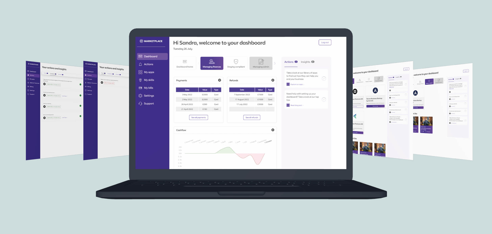
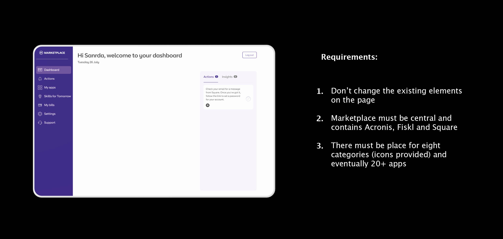
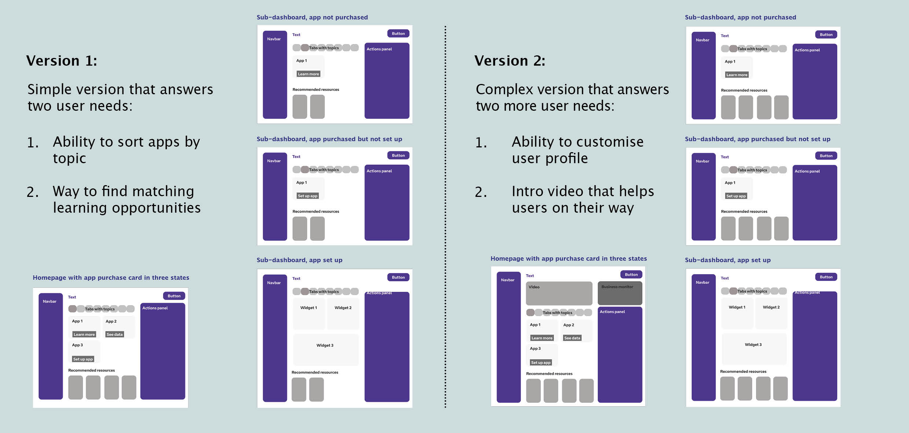
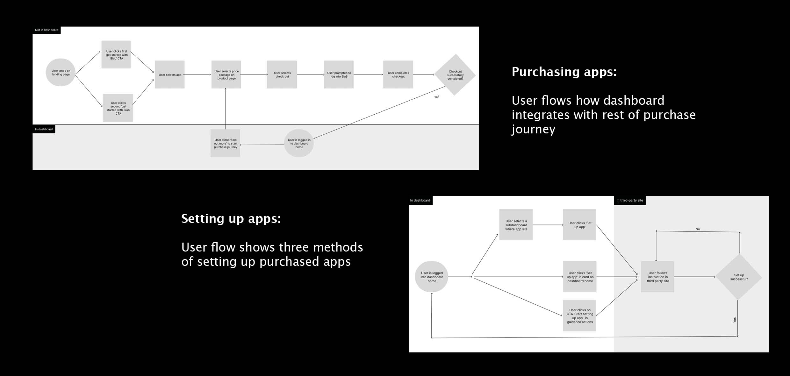
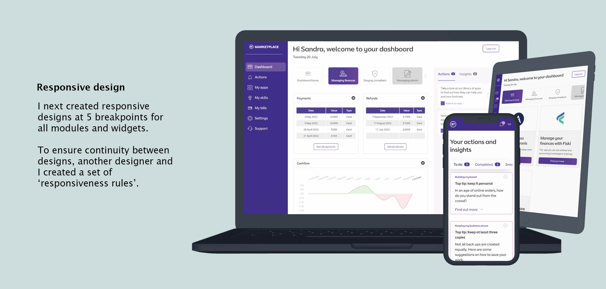

DATE
Aug/Sep 2022
ROLE
UX/UI designer
TOOLKIT
Figma/Mural
Business in a Box is a new product that supports SME business owners who want to digitise their business but aren’t confident they have the skills and tools to do so.
The product offers users a curated marketplace and a dashboard which showcases data from their purchased apps. It also offers users support and online learning.
Improve the existing dashboard so that it is never empty, even when users have not purchased anything or activated any of the apps that they have bought.
I worked through research which had previously been conducted by designers working on the project, to understand our user, their needs and pain points. Based on this and a number of stakeholder requirements, I mocked up two low fidelity designs.
I also looked at the other parts of the Business in a Box journey that were already there to make sure the dashboard fit in seamlessly, both in terms of look and in terms of design patterns.
I presented my solutions to stakeholders. Stakeholders liked the idea of modular design as it both accounted for the technical difficulties and time constraints faced by the development team and enabled future growht of the product. For MVP it was agreed to build the simplest design and the idea of creating greater customisation with a business monitor module was seen as a good post-MVP state.
The high-fidelity designs were passed on the user researchteam and the dev team. There were a couple of requirements stakeholders labelled as non-negotiable that I felt made for a sub-optimal user experience, so I asked the research team to test those assumptions. Meanwhile the dev team started building the experience, asking for my input where required.
Awaiting test results and the deployment of the MVP, I started looking at post-MVP steps that could be taken to raise Business in a Box to the next level, based on stakeholder requests.